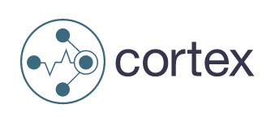
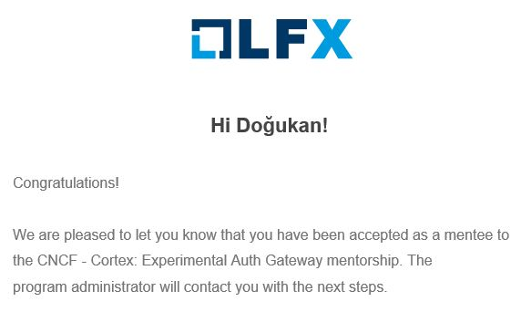

A Transformative Journey: My Experience as an LFX Mentee

Hello there, I am Doğukan, and today I want to share a journey that has been nothing short of transformative for me - the LFX mentorship program. Why am I writing about this, you ask? Because I believe that sharing experiences broadens horizons and can inspire others to embark on similar journeys.
Now, if you are wondering what the LFX mentorship program is, let me enlighten you. This remarkable program offers a structured platform for budding software developers to grow and flourish under the guidance of experienced mentors in the open-source community. It is not just about coding - it is about contributing to projects, learning from the best, and becoming a part of a vibrant and innovative community.
It is been three months since I stepped into this program as a mentee, and the insights I have gained, the skills I have honed, and the relationships I have built are invaluable. But let’s not get ahead of ourselves. Sit back and join me as I walk you through my exciting journey of growth and discovery with the LFX mentorship program.
The Journey Begins: The Selection Process
I remember the day like it was yesterday when I stumbled upon the LFX mentorship program. The opportunity to work on real-world projects and learn from experienced mentors in the open-source community was too enticing to ignore. After researching the projects, I found myself drawn towards Cortex: Experimental Auth Gateway project, more on that in the next section. It felt like a perfect match for my interests and skills, and I knew I had to apply.
The application process was both exciting and nerve-wracking. It required not only my resume but also a cover letter explaining why I was interested in the mentorship program and how I planned to contribute to the project. I spent a couple of days perfecting my application, making sure to highlight my previous experiences with open-source contributions and my eagerness to learn.
When the day finally came, my heart pounded as I opened the email from the LFX mentorship team. The first word I saw was “Congratulations,” and a wave of exhilaration washed over me. I had been selected as an LFX mentee! I was going to be a part of the project I was passionate about and learn from some of the best minds in the open-source community.

My Guiding Star: The Mentoring Experience
The next step was to meet my mentor, and I was thrilled to find out that I would be working with Friedrich Gonzalez. He is a Cloud Operations Software Engineer at Adobe and also one of the maintainers of Cortex. I was excited to learn from him and get started on the project. But first, I had to get familiar with the project and its codebase.
We had an introductory meeting with Friedrich. Before that meeting, he created small tasks for me and assigned them to me. In the meeting, we went over these tasks and discussed the project in detail. Having small and manageable tasks helped me to start working on the project quickly and not overwhelm myself with the amount of unknowns.
Also, the other maintainers of Cortex, organized a meeting to introduce us to Cortex and how we can set up a development environment to start contributing. Even though my work did not involve pushing code to Cortex, this meeting was very helpful to understand the project and its architecture and made it easier to contribute to Cortex later on.
Now, let me tell you a little bit about the project.
The Project: Experimental Auth Gateway
As I mentioned earlier, the title of the project is “Cortex: Experimental Auth Gateway”. Cortex is multi-tenant, long-term storage for Prometheus but in order to use the multi-tenancy feature, the tenants have to implement the authentication mechanism themselves. People came up with a solution that uses NGINX as a reverse proxy to authenticate the tenants and forward the requests to the correct backend. However, setting up NGINX is not an easy task and has some limitations. So, my project was about building a reverse proxy that is responsible for authenticating the tenants and forwarding the requests to the correct backend with just a simple configuration.
Cortex is written in Go and this project also needed to be written in Go. I had some experience with Go before, but I was not very comfortable with it. I started following Learn Go with Tests and easily got familiar with the language. Written C and Java before, Go was a breath of fresh air for me.
I got used to the language quickly and started working on the project.
I set up the Github actions for auth-gateway, which is the name of the project, and started writing the proposal to share with the maintainers of Cortex.
Just to cut it short and not bore you with the details, I completed the tasks that Friedrich assigned to me one by one and finished to project.
The first version of the project is built and ready to use under the name auth-gateway.
It is still in its early stages, and there are many things to do.
But before developing too many features without getting any requests from the users, we decided to get some feedback from the community on what they thought about the project and what features they would like to see.
So, if you use auth-gateway or have any feedback, please let us know by opening an issue on GitHub
The Bountiful Harvest: Key Takeaways and Personal Growth
Looking back at the start of my journey as an LFX mentee, I can see a clear transformation in myself. I arrived with a foundation of technical skills and a desire to contribute to open-source, but what I gained from this mentorship program was far more profound.
Aside from improving my technical abilities and understanding the importance of the open-source world, the most important takeaway was the confidence I gained. Overcoming challenges, developing a project from scratch for the community, and receiving positive feedback from my mentor boosted my confidence as a developer. I now believe more than ever in my ability to contribute and make a difference.
The LFX mentorship program was not just a learning experience; it was a journey of personal and professional growth. I started as an eager learner and emerged as a confident contributor, ready to take on new challenges and continue my journey in the open-source world. The lessons I have learned and the experiences I have gained are invaluable, and I am grateful for every moment of this journey.
The Road Ahead: Conclusion and Future Plans
As my time with the LFX mentorship program comes to a close, I look back on this journey with gratitude and pride. I am grateful for the knowledge I have gained, the connections I have made, and the growth I have experienced. I am proud of the contributions I have made and the challenges I have overcome.
But this is not the end of my journey.
Far from it.
I will take the responsibility of maintaining auth-gateway and will continue contributing to Cortex.
My goal is to be one of the maintainers of Cortex.
The bonds I have formed and the joy I have experienced in contributing to open-source have made me realize that this is a field I want to stay involved in. In the future, I also hope to give back to the community that has given me so much. Perhaps, one day, I might even become a mentor myself, guiding other enthusiastic individuals on their own open-source journey. After all, the beauty of the open-source community lies in its cycle of learning and teaching, contributing and guiding.
At this point, I would like to express my profound gratitude to the LFX mentorship team for giving me this opportunity. A special thanks to my mentor, Friedrich Gonzalez, who has been an invaluable guide through this journey. His wisdom, patience, and support have been instrumental in shaping my experience and growth.
In conclusion, the LFX mentorship program has been a transformative experience, one that has shaped me as a developer and as an individual. I eagerly look forward to what the future holds, carrying with me the lessons I have learned, the experiences I have had, and the passion for open-source that this program has ignited in me.